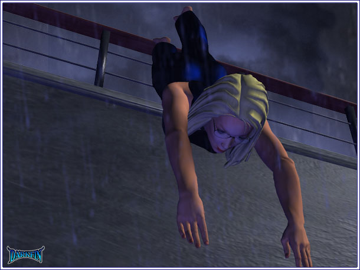
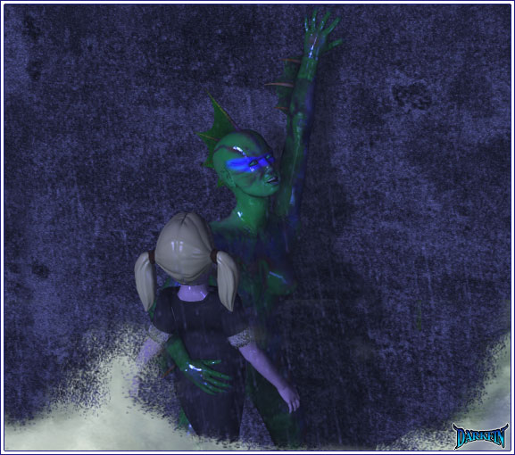
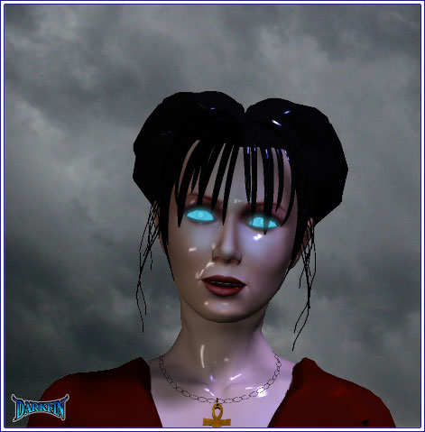

Hannah's parents and others watch in terror as the little girl slides over the side of the ship. Erika dives over after her. She catches Hannah in mid-air, curls her own body around the child to shield her against the impact of the water.

Erika (To herself) Hold on
Splash! The force of the water and the awkward angle knock the wind out of Erika. She is paralyzed in the water as Hannah flails to the surface, kicking and screaming. Erika starts to sink as the Darkfin morph takes over.
Hannah (Choking) Mommy!
Claudia (Rushing towards the side) NO
Craig tackles Claudia before she can go over. Ben holds their two other screaming children in his arms.
Claudia I HAVE TO GET HER, LET ME GO
Craig motions to two crewmen to keep a hold of Claudia. He throws a life jacket on himself and takes another for the girl.
Craig (Kicking off his shoes) I'll get her, I promise!
Craig now goes over the side but the ferocity of the storm and the surging waves make it difficult to see.
Craig (Now in the water) HANNAH — HANNAH
The ship lists again. Craig is caught in the current and slammed up against its side. He is knocked out but the vest keeps his head above water. Hannah succumbs to the cold turbulence around her. The body of the unconscious girl sinks down below the surface. Although Erika is now Darkfin, she is unable to get her bearings and flashes back to a time in Sri Lanka.
Samadara Remember, Erika — we are only testing your breathing abilities today — no heroics
It's a bright, sunny day and the water is a blue-jewel color. Erika is stretched out on the sailboat in a bikini. She yawns as Heavy Metal music blares from the stereo.
Samadara (Snapping it off) Are you listening to me?
Erika Yeah, yeah — let me know when we get to the site
Samadara This is a very crucial point in our research — if your lungs have not adapted, all else fails
Erika Chill, Sam — everything else has gone swimmingly, heh
Samadara So far
Erika Always the optimist
Samadara In science, you prepare for every possible outcome
Erika So that's why you have the crash cart below deck?
Samadara (Trying not to show her nervousness) It is simply a precaution
Erika picks up on Samadara's mood and goes over to her mentor.
Erika (Rubbing her shoulders) Listen, I ran and reran the simulations all week — nothing but green lights
Samadara (Sighing) I know
Erika (Taking her hand) Samadara — I'm not worried — and if something does happen, you'll be right there for me... I couldn't be in better hands
Samadara smiles and squeezes her hand. The smile quickly fades as she spots a marker buoy in the water.
Samadara We're here
After setting up some monitoring equipment, Samadara helps Erika with an emergency air tank and regulator.
Samadara You are to be down there for 20 minutes and 20 minutes only
Erika (Setting her watch) Right
Samadara (Tipping her head up to meet hers) I'm not kidding, Erika — not one second over!
Erika Alright, already, I heard you!
Erika positions herself on the side of the boat.
Samadara Whatever happens, do not panic — go inside yourself — remember the meditation and breathing techniques I taught you
Erika rolls her eyes, waves to Samadara, and plunges into the sea. For a few seconds, Erika is hesitant but then inhales deeply. The seawater stings her nasal passages and she starts to gag and cough. Trying not to panic, she recalls Samadara's words and takes, slow, measured breaths.
Erika (To herself) Just breathe
Regaining control, Erika realizes that she is indeed breathing underwater on her own.
Erika I can do this, I can do this...
Erika laughs underwater as she starts to swim deeper. Minutes go by as she follows a sea turtle. Next, she darts around with a school of fish. Erika loses complete track of time.
Erika I'm a mermaid without the annoying fish tail or Disney tunes, this is awesome!
Now underwater for over 30 minutes, Erika suddenly blacks out. Moments later, she wakes up with the breathing mask around her face and in Samadara's arms. Dr. Ranasinghe gently swims to the surface with her apprentice in tow. Erika struggles a bit.
Samadara Relax and inhale
Erika I'm trying but I feel like I'm choking
Samadara That's because you are — focus on me and take slow sips of air
They make it back to the sailboat. Samadara hoists Erika on deck and continues to minister to her.
Samadara Your color is coming back — feeling better?
Erika Slightly
Samadara GOOD, BECAUSE NOW I CAN YELL AT YOU FOR BEING IRRESPONSIBLE AND STUPID
Erika I think I'm getting sick again
Samadara This is not an amusing little game for a little girl to play — do you not understand the consequences of it all?
Erika Too much so
Samadara Then start behaving like a scientist and not a spoiled brat!
Erika Sam...
Samadara (Pacing) What?
Erika I was breathing underwater
Dr. Ranasinghe pauses and looks at her.
Erika (Half smile) No gills, no air tanks, I... was breathing under water!
Samadara now shares her smile. Erika struggles to her feet.
Samadara You were, weren't you?
Erika (Hugging her) WE DID IT
Samadara (Returning the embrace) No, you did it, Erika — it was all you
Erika I couldn't have done it without you
Samadara True enough
The two giggle with giddiness.
Samadara Next, we will need more modifications besides your lungs in order for your human body to withstand the rigors of the sea
Erika (Frowning) Does this mean I get a fish tail?
Samadara Um, not quite...
Darkfin snaps out of her state when a seal playfully bumps her foot. She spots the body of little Hannah floating towards her. She grabs the girl up in her arms and carries her to the surface. The sea still rages around them.
Darkfin Please, Hannah, come on — breathe!
As she blows air into the lungs of Ben and Claudia's daughter, she notices the unconscious Craig bobbing by in the water. She swims over to him and rips off his life vest and pants. She places the vest around Hannah and fastens the child to Craig by shredding the pants with her armfin and binding them both with the strips.
Darkfin Time to get you both back on deck...
A deep rumbling sound is heard as the ship continues to take on water.
Darkfin As long as it does not sink before I get to it...
A bolt of lightning cracks from the clouds and singes the side of the ship.
Darkfin Or before we fry
With Craig and the girl under one arm, Darkfin carefully begins to scale the stern. A fuel leak in the surrounding water makes it extremely difficult for her hand and feet suckers to stick on the slick metal.

Darkfin This is not productive
Darkfin uses all her strength to shimmy up as much as she can but then slides back down a bit. She continues to do this until they finally near the top.
Darkfin (Getting dizzy) Just... a few feet... more
Before she can slip again, a hand reaches down and grabs a hold of Craig's arm. Darkfin looks up and stares at a glowing-eyed Penny Renselier. Neither one of them says a word as Penny hauls Craig up and takes Hannah in her arms. The voice of a crewman calls out.

Crewman MISS — MISS, WHAT ARE YOU DOING THERE?
Penny turns around as Darkfin does a quick backflip into the water.
Crewman HOLD ON, I'M GETTING HELP
With Craig and Hannah now safe, Darkfin turns her attention to the gash in the ship. She swims underneath to take a look.
Darkfin (Inspecting the hole in the hull) This was not made by conventional explosives
She swims in a circle, trying to decide the best way to help. The ship only has a few more minutes before it sinks.
Darkfin (Bowing her head) I hope they will help
After a brief moment of meditation, Darkfin calls upon her rarely used sonar skills to reach a pod of orcas. One swims over to her and they communicate. After a long silence, the rest appear.
Darkfin No, I will not have you do this - there must be another way
The oldest whale brushes by her and sacrifices itself by plugging up the gash in the ship with its body. The jagged metal rips into its flesh. Warm blood floods the frigid waters. A chorus of keens and clicks echoes throughout.
Darkfin I am so very sorry but thank you for your gift - I will forever be in your debt
Another orca indicates to her that if the ship did sink and break apart, the resulting oil spill would be a hazard to them all.
Darkfin (Checking the ship) The water has slowed... it is working
The sounds of another ship are heard. It is the signature of a USCG vessel. Help has finally arrived.
Darkfin About time
Suddenly, all of the orcas scatter quickly in different directions.
Darkfin WAIT — there is nothing to be afraid of, it is only a Coast Guard vessel!
There is no response. The water around Darkfin dramatically increases in temperature.
Darkfin What now?
Five large multi-colored lights surround Darkfin and head straight for her.
With the shades drawn and no lights on in her house, Morrigan huddles on the sofa and reads a text message from Darkfin on her secret account.
Morrigan It sure doesn't feel like all is well
Now listening to the approaching storm, Morrigan ponders as a lone candle flickers dimly next to her tarantula's terrarium.
Morrigan (Analyzing the rainfall patterns) Something is off, Tallulah... very off
A crack of lightning explodes directly over the house. Morrigan grabs her marked foot and screams.
Morrigan They're after her!
Morrigan bolts out of her house and into the yard. She slams directly into Amy who is unloading groceries from her car.
Amethyst (Tumbling backwards and dropping a bag) MORRIGAN, WHAT ARE YOU DOING?
Morrigan I'M SORRY, I'VE GOT TO STOP THEM
Amethyst WHO?
Amy frantically scans around and shoves an empty grocery bag over Morrigan's head.
Amethyst Are you crazy? — we can't let anyone see you out here — get back in the house!
Morrigan (Throwing off the bag) IF YOU DON'T DRIVE ME, I'LL RUN
Amethyst FINE, FINE, GET IN THE CAR
They do so and speed off. Minutes later, Morrigan sobs into her hands.
Amethyst Can... can you tell me what's happening?
Morrigan can only gasp.
Amethyst I don't understand, I would have been made aware of my Father's plans
Morrigan (Shaking) They got her... they already got her
Amethyst Who?
Morrigan (Staring out the window) Ona Rosa
Amethyst What?
Morrigan It's too late — GET ME TO THE BEACH
Along with three other USCG rescue vessels, Anita approaches the Meeramar tanker. They are unable to establish communication with the ship.
Anita I don't know how we're gonna reach everyone with all this chop
Crewman There's some kind of strange EM interference going on
Anita The storm?
All of the power abruptly goes out.
Crewman (Trying not to panic) I think it's underwater
All of the ships now take on a dull blue glow.
Crewman What is this, St. Elmo's Fire?
Anita It wouldn't be covering the entire ship...
Anita and the others check the water as a slow hissing sound is heard.
Anita Or beneath the surface — LET'S GET THOSE PEOPLE AND THEN GET OUTTA HERE PRONTO
The battle between Darkfin and the five mysterious lights rages below. Each one takes a pass and slams directly into her. They're too fast, too powerful. Badly battered and bruised, Darkfin starts to lose consciousness. All of the sudden, her trident appears and she starts bashing the lights like helpless piñatas. They retreat and disappear.
Darkfin (Regarding the orange glow of her weapon) You heard me
Before blacking out, Darkfin wraps both hands tightly around the trident. The rest of her body goes limp but the suckers on her palms keep her anchored to the trident. The glow fades but it moves quickly through the water, towing its master with it. Almost instantly, everything is calm again.
Anita (Looking at the clearing skies) Are the rest of you seeing this?
The crew nods in silence.
Anita I have no idea what the hell is going on or how long it's going to last — let's start moving those people, c'mon!
Within minutes, they link up with the Meeramar tanker and start evacuating the passengers. Anita searches the ship and finds the unconscious Craig in the corner with Ursula. Ben and his family are close by.
Anita CRAIG
Ursula (Cradling him) It's about time you lazy people came to help
Anita STEP OFF, YUGO-BITCH - CRAIG, CAN YOU HEAR ME?
Ursula HE CAN'T HEAR YOU BECAUSE HE IS KNOCKED OUT — HE NEEDS TO GET TO HOSPITAL
Anita AND THAT'S EXACTLY WHAT WE'RE GONNA DO IF YOU GET YOUR FAT CULO OUT OF THE WAY
Claudia steps in between them.
Claudia Girls, let's please keep some semblance of calm
Ben (Holding his children close) Captain Phelps won't wake up but his breathing is steady
Anita Can you tell me what happened?
Claudia (Wiping away tears) He saved Hannah's life
Anita The water was that bad on deck?
Claudia No, they were IN the water
Anita (Hushed) Amazing... they should have drowned in that mess
Ben A whole flock of guardian angels must have been looking out for them
Anita Or one in particular
Ben Excuse me?
Anita Nevermind — we need to get Craig help ASAP — he's already had his share of nasty head blows
The crew rushes over and takes Craig away on a stretcher. Ursula and the others follow. Just as Anita starts to leave, her wrist begins to throb. She notices Penelope staring at her from across the room.
Anita (To a crewman) Why hasn't Miss Renselier been evacuated with the others?
Crewman We were keeping her isolated
Anita Isolated for what?
Crewman Questioning... among other things — she's the one who found Captain Phelps and the girl
Anita Wait, I thought they were in the water?
Crewman They were
Anita (Rubbing her head) I'll take care of her — you get the rest out of here
With the ship almost deserted now, Anita goes over to a truculent Penelope.
Anita Care to tell me what went down... or up?
Penny (Arms folded) Care to tell me why you're leaving me here to die? — not that I really mind...
Anita Chica, I WAS you ten years ago, now drop the bad-ass teen 'tude and tell me what I need to know
Penny (In Anita's face) I think you already do!
Penny's eyes start to glow once again as Anita grabs her wrist cast and cries out in pain.
Near the shoreline, a silent Morrigan kneels in the sand and holds up her left hand. Her foot mark glows a bright orange. A baffled Amy watches as the rain pours down.
Amethyst Can't you tell me what you're doing? — someone is going to see you and you're going to get caught — Morrigan... are you listening to me?
Morrigan (Chant like) I heard you
Right on cue, the gleaming orange trident appears from the waves. It drags Darkfin behind in the water and they both wash ashore at Morrigan's feet.